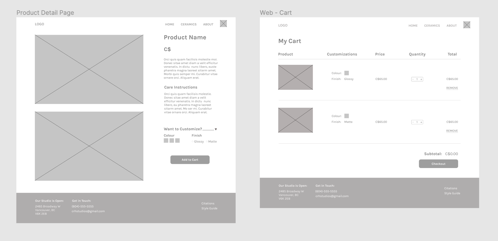

As a three month academic project, CRH Studios is a fictional company with a built e-commerce portal for the business. The objective of this project was focused on grasping a firm understanding of the potential user goals and flows within an online service and be able to code and design a fully functional, front-end responsive website.
My team and I took on the roles of UX/UI designers to create a brand identity for a small studio selling handcrafted ceramic goods with the aim of developing a front-end website that is both engaging and easy to navigate for potential users.
content goals from comparative research
THE PROCESS
content & needs
In the early stages of the process, we conducted comparative research across multiple ecommerce sites to determine the required functionality, client goals, and the typical consumer flow. To summarize our findings, we found that the most important points would include clear pathing, price transparency and credibility, and an overall user-friendly experience that is seamless.
We took part in developing our sitemap which helped us clarify our site's goals before designing our content. This allowed us to reinforce our goals and help us give direction to our project.
high-level site map
design considerations
Collaborating in Figma, we developed low to medium-fidelity wireframes to create a general layout before moving forward to higher fidelity mockups consisting of color schemes, textual content and images. This was a long iteration process, as we went through multiple feedback sessions, while keeping in mind the user and their needs.

Wireframes for Product Page and Cart
Wireframes for Product Layout and About Page
style guide
CRH Studios curates timeless pieces that embrace the elegance of a home created by the featured artists. Our target audience is imagined as a slightly more mature demographic either with a love for arts, or goals to purchase artisanal ceramic works for themselves and their loved ones. Users who are curious or are looking for handcrafted ceramics can navigate the website to browse curated works for sale.
Our style guide embraces the modern and timeless aesthetic through our use of fonts, color scheme, and white space. We used earthy tones to highlight the luxury of handcrafted ceramics with coral tones for our call to action buttons and links.
CRH Studios Style Guide
challenges
I was heavily involved in the initial designs in many of the pages and through many iterative processes through class critique and overall team collaboration, we were able to settle on our final pages. From there, we worked in building the pages in HTML and CSS and I was responsible for a subset of them, including the home page, product layout, and cart.
Individually, I had come across some challenges, including how to build out each page exactly like our design. I didn’t want to let my team down by not being able to code the pages precisely like we designed, so I had to do a lot of troubleshooting on coding platforms like Stack Overflow and using the built-in inspection tool on Google Chrome to figure out my problems. Then as a team, we collaborated on our pages to make sure they were all cohesive and responsive, helping each other when needed to fully build out all our pages.
Despite the challenges, this project has definitely taught me valuable technical and design skills, including how to comfortably code HTML/CSS web pages and how to communicate and work together in a collaborative setting.
reflection
As a team, we would constantly be testing the functionality of our website making sure every single element was working as expected and whether our design would be feasible on desktop and mobile. We had to reiterate a few design choices, for instance, our checkpage’s quantity checker was quite small, so many of our users could not press the button without accidentally clicking something else. From there, we redesigned our buttons with accessibility and touch targets heavily in mind.
The biggest key takeaways from this project was the consideration of potential users’ expectation of a web design. As an e-commerce site, trust, reliability and credibility is extremely important to create a trustworthy relationship between the user and client. When analyzing the tasks and goals of the user, we were able to fully build a front-end website that is meaningful, functional and considers the aesthetic of the client. As a team, we were able to access how web content lives on the page and how the user may interact with it, all while considering unique designs that relayed the brand's message and statement.
I learned the value of understanding potential users’ goals and tasks when building out an e-commerce website, the importance of keeping design consistent across all pages to maintain reliability and how to design a good experience for the user through the use of design and interactivity.